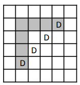

Aplicatia 1.
Problema turelor. Se cede afișarea tuturor modurilor de aplasa n ture, pe o tablă de șah nXn așa încât
oricare două să nu se atace. Cunoaștem că pe o tablă de șah două ture se atacă dacă sunt plasate pe
aceeași linie sau pe aceeași coloană. De exemplu, pentru n=3 avem soluțiile:
Rezolvare:
La prima vedere problema este total atipică față de ce am studiat deja. Noi știm să generăm soluții sub formă
de vector și aici avem de-a face cu ceva în două dimensiuni. Facem însă următoarea observație: pe o linie nu
pot fi două ture, deci pentru o linie am putea să memorăm coloana turei care se află pe acea linie. Ajungem
așadar la un vector acum în care x[i] reprezintă coloana turei care se află pe linia i. Adică în vectorul soluție
de la backtracking, indicii ar reprezenta linii de pe tabla de șah iar valorile ar reprezenta coloane. Ne-am
asigurat până acum de linii distincte întrucât o componentă a unui vector poate avea o singură valoare și cum
aceasta reprezintă coloana corespunzătore liniei reprezentată de componentă, asigurăm unicitatea turelor pe
linii. Acum ne mai rămâne doar să punem condiția să nu avem două ture pe aceeași coloană. Se vede repede
că asta este echivalent să impunem ca elementele din vector să fie distincte (valorile înseamnă indici de
coloane). Așadar problema noastră este absolut identică cu aceea de generare a permutărilor. Ne putem alege
însă modul de afișase și iată de putem obține:
Cod:
for (i=1;i<=n;i++)
cout<<’(’,i,’,’,x[i],’)’;
cout<<”\n”;
for (i=1;i<=n;i++) {
for (j=1;j<=n;j++)
if (x[i] == j)
cout<<"T";
else
cout<<"*";
cout<<"\n";
}
cout<<"\n";
Aplicatia 2.
Problema damelor. Se cere afișarea tuturor modurilor de aplasa n dame, pe o tablă de șah nXn așa
încât oricare două să nu se atace. Cunoaștem că pe o tablă de șah două dame se atacă dacă sunt
plasate pe aceeași linie, pe aceeași coloană sau pe aceeași diagonală. De exemplu, pentru n=3 nu
avem soluții, dar pentru n=4 le avem pe următoarele două:
Rezolvare
Această problemă este foarte asămănătoare cu aceea a turelor, mulțimea soluțiilor sale fiind inclusă în
mulțimea soluțiilor de la ture. Condiția suplimentară, aceea ca oricare două dame să nu se atace pe diagonală
este:
|𝑝𝑎𝑠 − 𝑖| ≠ |𝑥[𝑝𝑎𝑠] − 𝑥[𝑖]|
Dacă două dame s-ar afla pe aceeași “diagonală” ar însemna că se formează un “triunghi dreptunghic isoscel”
ca în figură.

Lungimile laturilor sale sunt date de diferența liniilor și a coloanelor pentru punctele pe care le ocupă. Noi am
folosit aveste valori în modul pentru a prinde toate cazurile care pot apărea pentru dispunerea celor două
puncte.
Vom păstra testul cu vectori de frecvență pentru elemente distincte și vom pune în verif testul pentru
diagonale. Facem însă observația că este posibilă optimizarea cu vectori de frecvență și pentru testul de
diagonale, dacă ținem cont că elementele de pe aceeași paralelă la diagonala principală a unei matrice
pătratice au diferența indicilor constantă iar cele de pe aceeași paralelă la diagonala secundară au suma
indicilor constantă. Lăsăm această optimizare ca exercițiu.
#include
using namespace std;
int n;
int x[30], f[30];
int modul(int x) {
return x > 0 ? x : -x;
}
int verif (int pas) {
/// la pas-i nu am mai pus modul intrucat noi testam
/// in urma si atunci sigur avem pas>i
for (int i=1;i < pas;i++)
if (pas-i == modul(x[pas]-x[i]))
return 0;
return 1;
}
void backtrack(int pas) {
if (pas == n+1) {
for (int i=1;i<=n;i++) {
for (int j=1;j<=n;j++)
if (x[i] == j)
cout<<"D";
else
cout<<"*";
cout<<"\n";
}
cout<<"\n";
} else
for (int i=1;i<=n;i++) {
if (f[i] == 0) {
x[pas] = i;
f[i] = 1;
if (verif(pas))
backtrack(pas+1);
f[i] = 0;
}
}
}
int main () {
cin>>n;
backtrack(1);
}